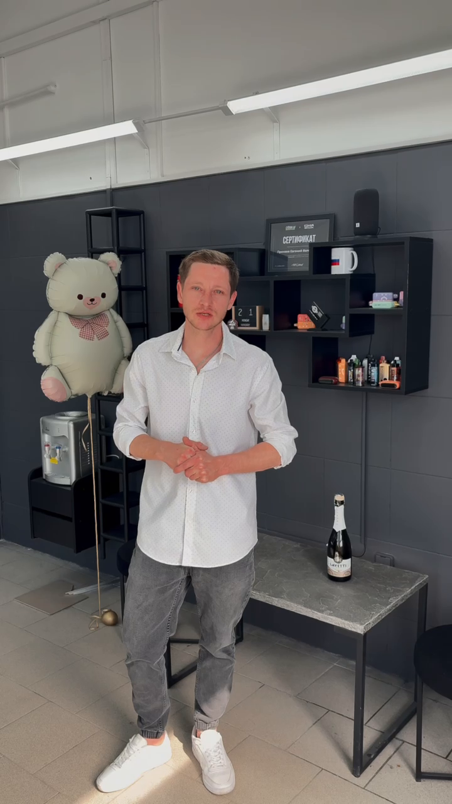

DETROIT Glass Studio

Открытие студии · 8 мая 2026О студии
DETROIT — студия реставрации автомобильного стекла в Липецке. Полировка и шлифовка, сколы и трещины, восстановление оптики. А ещё — защитные покрытия и химчистка салона.
Принимаем на Баумана, 212. Работаем и с выездом: возможность и условия обсудите с мастером.
О студииСтудия на Баумана, 212
8 мая 2026 года DETROIT сообщил об официальном открытии студии. Сегодня в канале — автомобили с разными задачами: от скола на стекле до химчистки салона.
В разделе работ собраны реальные ролики. По ним можно посмотреть, с какими автомобилями и повреждениями обращаются в студию.
Публикация об открытии// Наши работы
Все работы// Контакты
Время работыЕжедневно
Ежедневно
09:00–21:00
Приём в студии и выезд.
Условия выезда уточните у мастера.